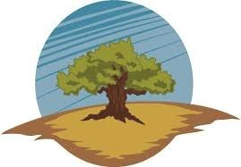
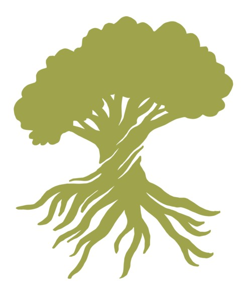
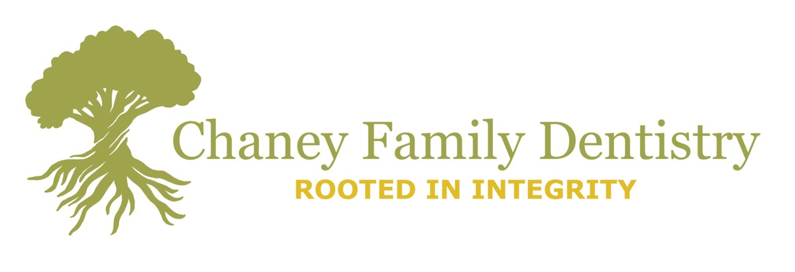

Chaney Family Dentistry
The thing that actually made this practice different was that they refuse to sell you work you do not need. The job was to get that into a mark.
Chaney Family Dentistry is a father-and-son practice in Vallejo, California. In early 2021 I built them a full brand refresh — logo, palette, tagline, illustrations, staff portraits and sourced photography — which then went into their new website, along with a suite of printed material.
Before and after
The family name Chaney means oak, and an oak already sat at the centre of the old mark. They wanted to keep the tree and lose everything around it.



the horizontal lockup, as used across web and print
Where the mark came from
Talking to Dr Alex Chaney, the thing that kept coming up as the difference between his practice and every other dental office was ethics: they are firm about only recommending procedures that are genuinely needed. Not a soft claim — a policy. That is what the mark had to hold.
So the tree is drawn in two equal halves. Canopy above, root system below, roughly the same mass either side of the ground line: the part you can see is only ever half of it. The tagline that came out of the same conversation is rooted in integrity.
And because this is a dental practice, the roots are doing a second job. A tooth has roots too, in about that proportion, hidden in about that way. The mark reads as an oak first and a tooth second, which is the right order round.
The palette
Eight named colours, built to feel like walking through an oak grove — trust, calm, warmth, steadiness. In a room where people arrive nervous, that is the whole brief for colour.
sampled from the delivered logo set — every variant was cut in its own named colour
the portraits, and why they exist
The old site had photographs of the dentists and staff shot at different times, in different light, against different backgrounds. Individually fine. Together, a wall of mismatch — the visual equivalent of the appointment cards that had come from four different printers.
Because this is a small practice — two dentists and a handful of trusted staff — drawing everyone was actually the cheaper fix as well as the better one. Every portrait is made the same way, so the team page finally reads as a team. It is also a thing a big chain cannot do.
the hand-drawn difference
A photograph of a dental office is a photograph of a dental office. It is accurate and it is cold, and it does the opposite of what a nervous patient needs from a homepage.
So the office photo was replaced with a drawing that carries exactly the same information — where you come in, what the space is like — and none of the clinical chill. The same reasoning produced a drawn hero image of the father-and-son team.
Stationery, business cards and appointment cards, all cut from the same palette and the same lockup. The appointment card is the one that matters most and gets designed least — it is the only piece of the brand that goes home in a pocket and sits on a fridge for six months.
the honest part
This page is currently short on the work itself. The logo set, the lockup and the palette are here because I still have the delivered files; the portraits, the drawn office, the hero image and the printed cards live only on the client’s site and in an old portfolio, and are not in front of me. What is written above about them is description, not evidence, until the artwork is added.
“Elizabeth did a fantastic job with our website and overall re-branding. I had a lot of older office materials like appointment cards and handouts, but it all looked like it came from different places, and our website didn’t seem to have much of a coherent theme or look. Elizabeth was really helpful in picking out a color theme and making sure to check in at every step along the way. Now everything looks much more coherent and simplified. We’ve since had several very positive comments about our new website and materials. Elizabeth was easy to work with, detailed, and timely. I would highly recommend her for any graphic work.”
— dr alex chaney, chaney family dentistrySee the brand in use
The practice site it was all built for.
open to marketing operations, analytics and martech roles
Let’s talk.
Remote, or Albuquerque and hybrid. If you want the architecture behind any of the work here, ask me and I will walk you through it.